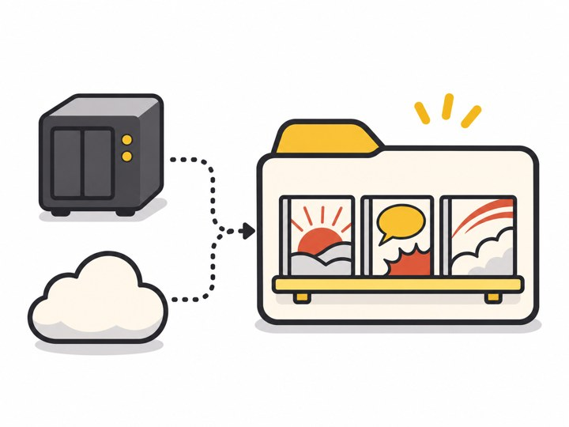

iPhone・iPad・Android の漫画ビューア
自炊の漫画を、
フォルダから本棚に。
「ファイル」アプリでつないだ NAS やクラウドのフォルダを選ぶだけで、作品と巻をまとめた本棚になります。日本の漫画は右綴じの見開きで。開くときだけ読むので、全部を端末に写しません。
App Store・Google Play で配信予定買い切りで全部の機能が使えます。アプリ内課金・サブスクリプション・広告はありません。

こんな困りごとのために
取りこみが面倒
転送ソフトは要りません。「ファイル」アプリでつないだ NAS（SMB の共有）・iCloud Drive・クラウドのフォルダを、そのまま本棚にできます。
本棚がばらばら
ファイル名から作品と巻をまとめ、巻の順に並べます。合わないときは名前を直したり、巻を移したりできます。
見開きがずれる
右綴じが既定で、表紙は単独、元から見開きの画像は1枚で出します。ずれたら［1ページずらす］。
大きな zip で落ちる
見るページの前後だけを読み、縮めた絵を覚えます。大きな zip でも全部を広げません。
どこまで読んだか分からない
次に開くと読みかけのページから。巻の最後で次の巻へ進めます。
広告がじゃま
とじしろに広告はありません。買い切りで、あとから支払いを求めることもありません。
できること
| 形式 | zip・cbz・rar・cbr・7z・cb7・pdf・画像（jpg・png・webp・avif・heic）のフォルダ |
|---|---|
| 本棚 | フォルダを選ぶだけ（NAS・iCloud Drive・クラウド）・作品と巻の自動まとめ・名前の直し・巻の移動 |
| 読む | 右綴じ／左綴じ（作品ごと）・見開き（横向き・iPad・iPhone Duo）・1ページずらす・拡大 |
| 続きから | 読みかけのページ・次の巻へ・iCloud で iPhone と iPad をそろえる |
| データ | アカウントなし・通信なし（iCloud を除く）・本のファイルは端末に写さない |
とじしろは、あなたが持っているファイルを読むアプリです。漫画は入っていません。使い方・プライバシーポリシー・利用規約もご覧ください。